🇹🇭 Krabi Guide: 13 places – limestone cliffs, kayak, Muay Thai, cave, hot springs & islands
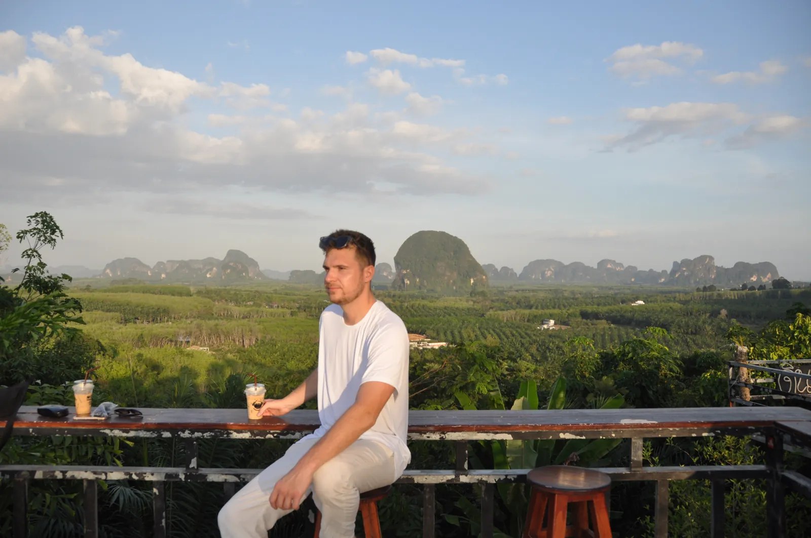
Table of contents
Krabi is the landscape you fly to Thailand for: limestone cliffs everywhere, in the jungle and in the sea. Plus Muay Thai, hot springs and caves.
Prices and times are guidelines (2026).
🗺️ Map: all 7 places
My story in Krabi & Ao Nang
I had expected beach. What I got was Muay Thai, a cave you can only continue through with a headlamp, monkeys as neighbours and a kayak tour between limestone cliffs. In Krabi the landscape turns dramatic: limestone cliffs rise everywhere from the jungle and the sea. By kayak we went between them, by scooter along country roads between palms and power poles. In Ao Nang a monkey mother with her baby sat at the roadside as if waiting for the bus. And once a monitor lizard simply lay in the middle of the path.
What sticks: a café on a hill, iced coffee in hand, nothing in front of me but jungle and karst mountains to the horizon. A longtail boat at sunset. And a storm that moved grey and dramatic over the islands.
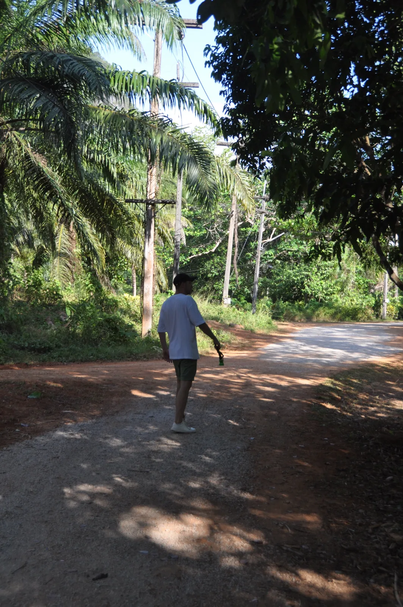
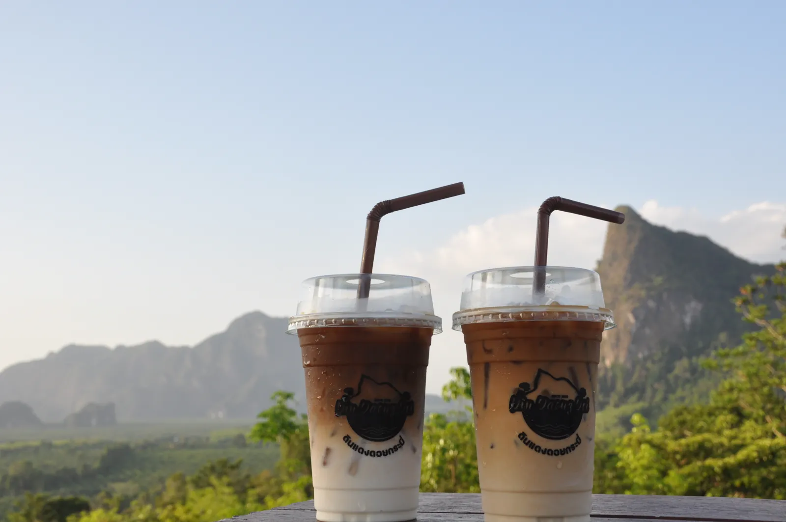
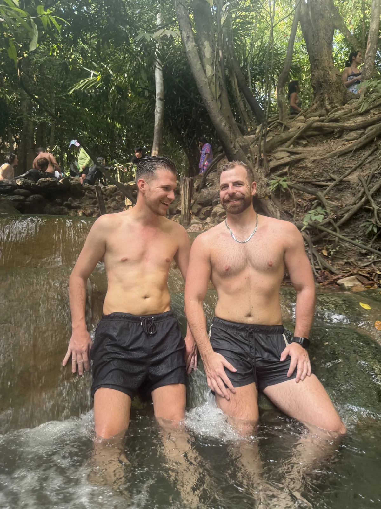
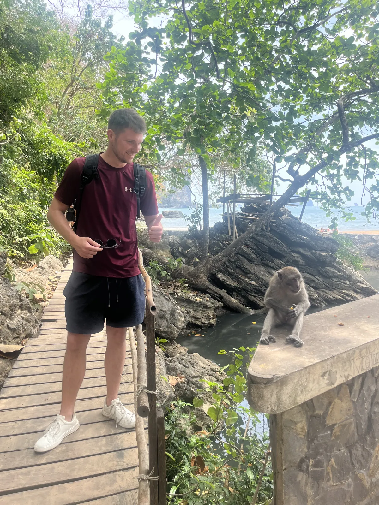
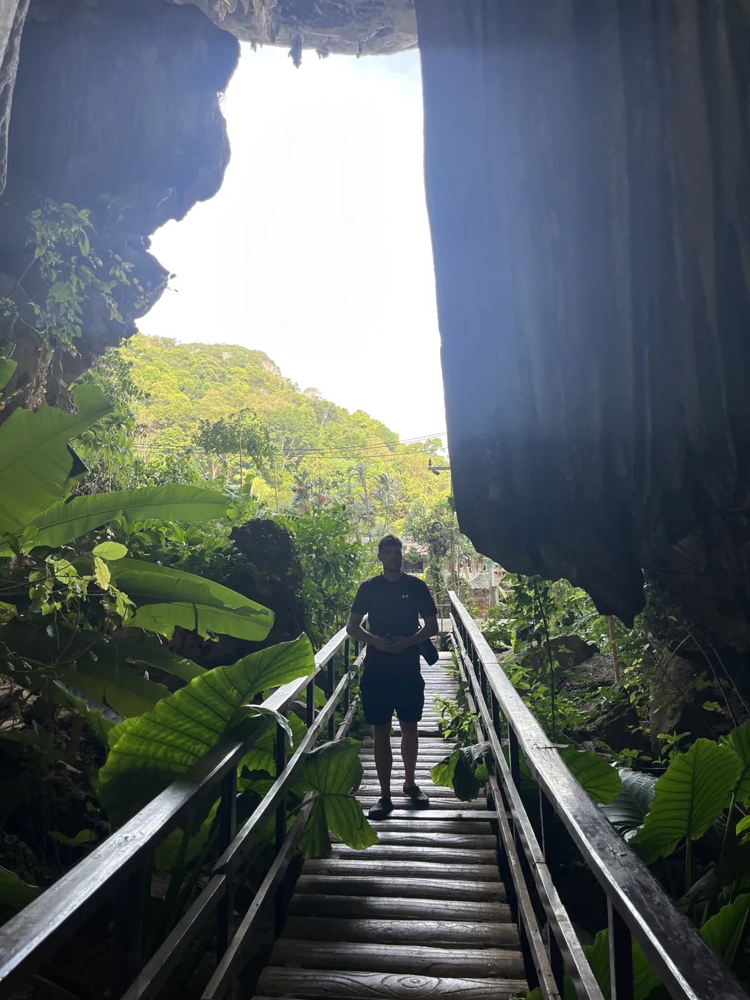
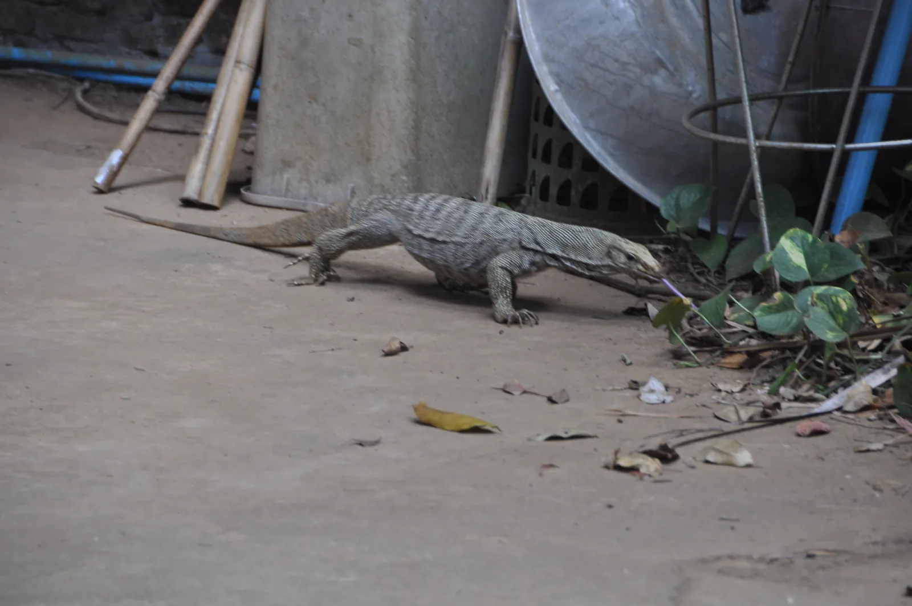
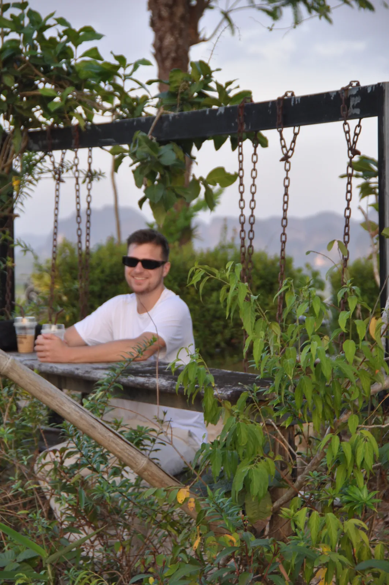
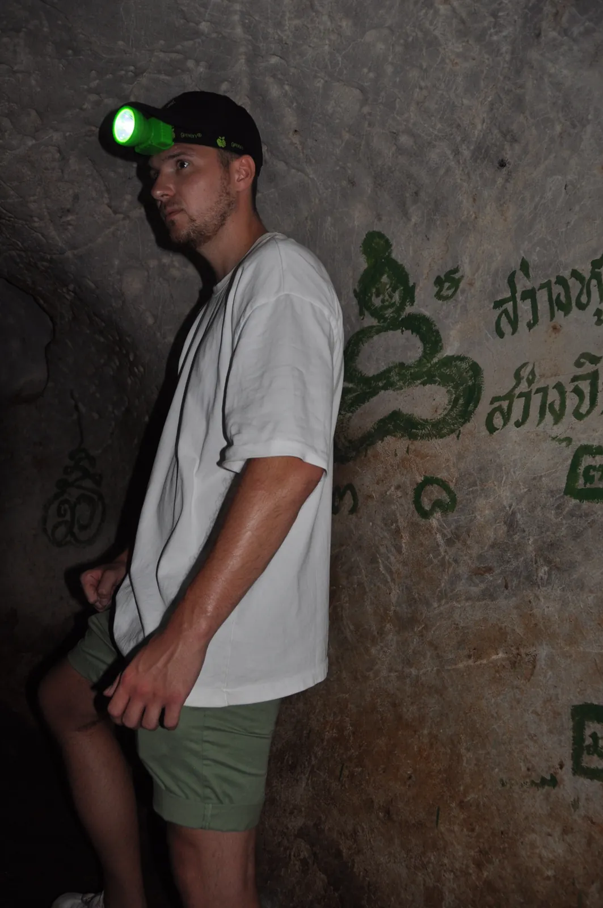
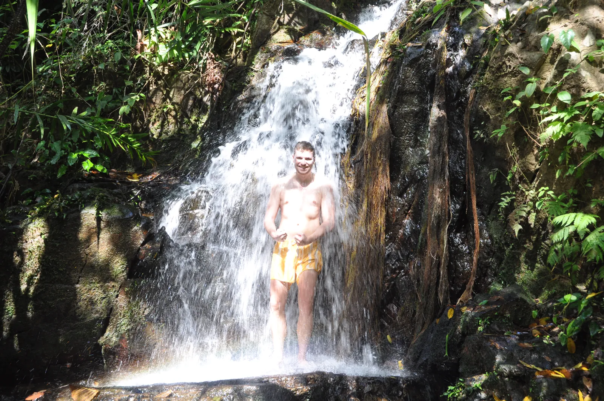
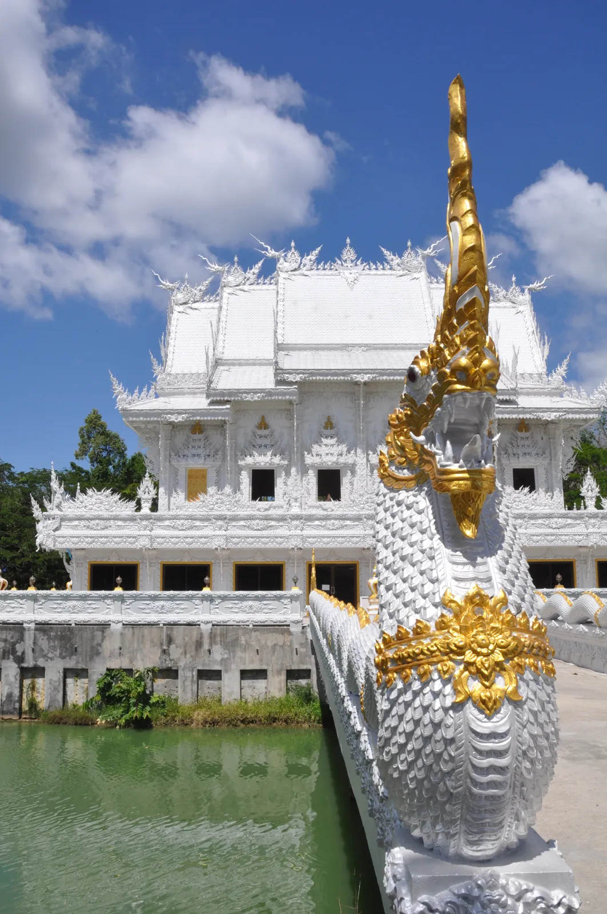
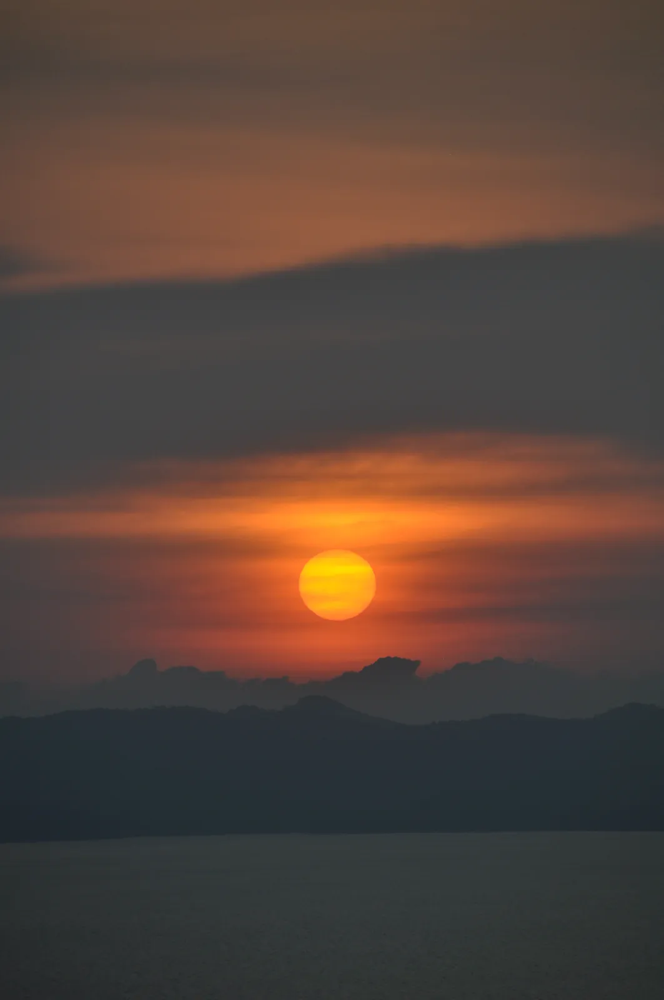
This guide contains affiliate links (GetYourGuide, Omio). If you book through them I earn a small commission – you never pay a cent more. Prices and opening hours change – double-check before you go.
🆓 Free things to do
1 places in Krabi & Ao Nang you can enjoy without an entry fee or completely free (for some, only a part costs extra, e.g. a tower or museum):
At a glance
Getting to Krabi and around
Krabi has its own airport; from Phuket you get there by bus or boat (check timetables beforehand). Around Ao Nang you use scooters, songthaews or longtail boats. Book kayak, island hopping or cooking class in advance – the good slots go quickly.
1. Must-sees
Kayak between limestone cliffs
By kayak we went between the limestone cliffs – the footage still shows up in my Reels.
Railay Beach
Railay Beach can only be reached by boat, and that is exactly its charm. Highlights: limestone cliffs, turquoise water and the longtail ride.
Tip: Busy by day; come early or late.
Muay Thai at Ao Nang stadium
An evening at Ao Nang’s boxing stadium: noise, sweat, referees, packed stands – the full programme. The arena is small and there are kids’ fights too, but the atmosphere is the real show.
Tip: Decide beforehand whether you are comfortable with the children’s fights.
Phra Nang Beach & cave
Phra Nang Beach is part of the Railay peninsula and is regarded as one of the most beautiful in Thailand: fine sand, turquoise water and tall limestone cliffs. The Phra Nang cave is a shrine venerated for fertility. You reach the beach on foot from Railay or by longtail boat.
Come early in the morning before the boats arrive.
Tip: Come early in the morning.
Ao Nang & night market🆓 Free to experience
Ao Nang is the main town with beach, restaurants, bars and tour providers. In the evening there is a night market with street food, snacks and souvenirs. From here boats go to Railay and the islands.
Compare tour prices from several providers.
Tip: Come in the evening to the night market.
Four-islands tour
The four-islands tour goes by longtail boat to islands like Poda, Chicken Island and Tup Island with sandbank, snorkelling spots and beaches. Tours usually take a day (compare prices and providers beforehand).
Take sun protection and water.
Tip: Compare providers and start early.
2. Hidden gems
Hot springs in the forest💎 Hidden gem
In the hot springs you sit in warm water in the middle of the forest, tree roots above you. Foreigners pay about 200 THB. Calm, few people.
Cave with a headlamp💎 Hidden gem
One cave could only be entered with a headlamp. From another a steep staircase led out into green light.
Café on a hill💎 Hidden gem
A café on a hill, iced coffee in hand, nothing in front of me but jungle and karst mountains to the horizon.
Tiger Cave Temple
1,260 steps to the top with a wide view. Admission is about 50 THB; bring lots of water. Monkeys are around – secure your bags.
Emerald Pool & Blue Pool💎 Hidden gem
In Khao Phanom Bencha National Park lie the Emerald Pool and the Blue Pool, natural basins with turquoise water in the jungle. You can swim when water level and rules allow. The area is calmer than the coast.
Come early, wear sturdy shoes and check admission and times beforehand.
Tip: Come early and wear sturdy shoes.
Hong Islands💎 Hidden gem
The Hong Islands with lagoons and limestone cliffs lie off the coast. There you can kayak, snorkel and swim, often calmer than at the known beaches. Boats go from Ao Nang (check prices beforehand).
Choose a small group if possible.
Tip: Choose a small group.
Thai massage & cooking class
A Thai massage after a beach day and a cooking class belong to Krabi. In the cooking class you learn curry pastes, pad thai and mango sticky rice. Prices are usually moderate; check providers and hygiene beforehand.
Book the cooking class for the morning.
Tip: Book the cooking class for the morning.
What makes Krabi special
Krabi’s limestone cliffs consist of limestone that formed on the seabed hundreds of millions of years ago – which is why they rise so steeply from the water today. My verdict: Phuket for the start, Krabi for the landscape. Whoever only lies on the beach misses the best.
📍 Save this guide to Google Maps
1. Quick: open as a route
2. Permanent: as your own map (2 minutes)
- Download the file with all pins (KML button below).
- Open Google My Maps → “Create a new map” → “Import” → choose the file.
- Done – every place sits exactly where it should, with number, tip and a link back to the guide.
- In the Google Maps app the map appears under “Saved” → “Maps”, also on the go.
⬇️ All pins for Google Maps (KML) ⬇️ Download place list (CSV)
3. Save one by one
Your plan
Day 1: Three days in Krabi, Noel’s way
- Day 1 – scooter, hilltop café, longtail at sunset
- Day 2 – kayak between limestone cliffs, Muay Thai in the evening
- Day 3 – cave with headlamp, hot springs
FAQ
Phuket or Krabi?
Phuket for the start, Krabi for the landscape.
How do I get to Railay Beach?
Only by boat (longtail) from Ao Nang or Krabi.
🗺️ All places on my map → More guides and reels on Instagram: @hiddengem.atlas
Share this guide: On WhatsApp